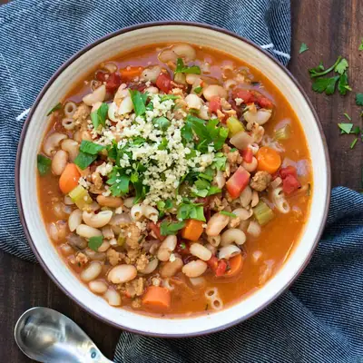

Vegetarian Pasta Fagioli

Ingredients
- 1 cup chopped sweet or yellow onion
- ½ cup chopped carrots
- ½ cup chopped celery
- Drizzle of your favorite oil to sauté with (, or broth if oil free)
- 3 cloves garlic (, minced)
- 1 tablespoon fresh chopped rosemary leaves
- 1 teaspoon sea salt
- ½ teaspoon ground black pepper
- 2 links vegan/veggie sausage (, optional (see note)
- 1 can great northern beans (, with liquid (15 ounce can)
- 1 can diced/crushed tomatoes (, with liquid (14.5 ounces)
- 4 cups veggie broth (, low sodium if needed)
- 8 ounces pasta (I used Living NOW Organic Quinoa Macaroni) (, gluten-free if needed)
- Grateable Vegan Parmesan
- Parsley
Steps
- Sauté onion, carrots and celery over medium heat with a drizzle of oil, or broth, until it becomes translucent, about 2-3 minutes.
- Add garlic, rosemary, salt, pepper and sausage. Sauté 1-2 minutes until everything mixes well.
- Add beans with liquid, tomatoes and broth. Turn the heat to high and bring to a simmer, about 5-6 minutes.
- Turn the heat back down to medium, add the pasta and cook another 6-7 minutes. Begin checking at 5 minutes as stove tops vary.
- Serve with optional parmesan and/or parsley.
Recipe by Anjali Shah, from The Picky Eater. Saved here for personal use; the original has the full notes, tips and photos. Open original